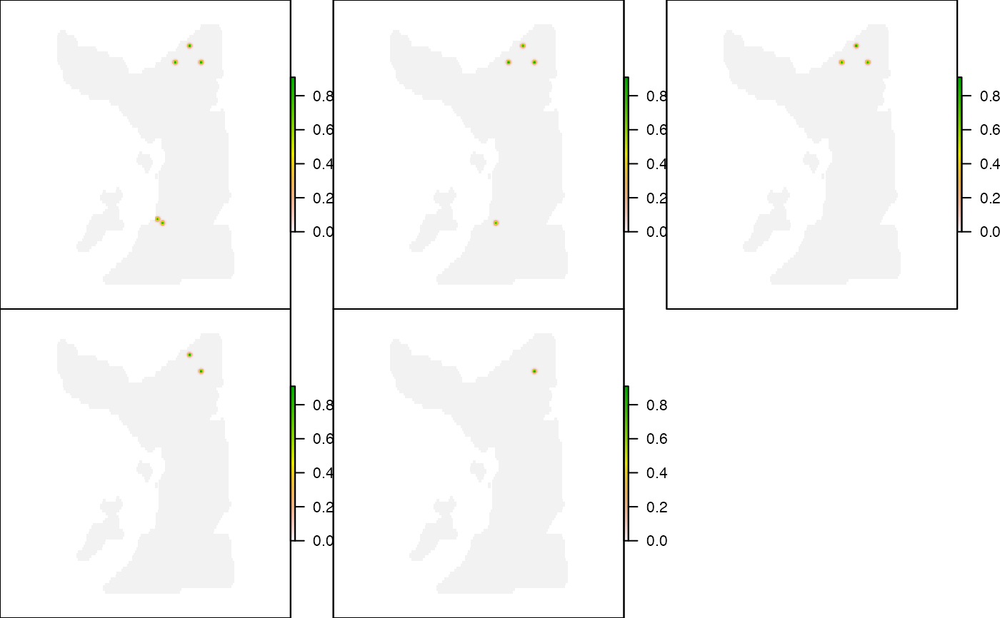
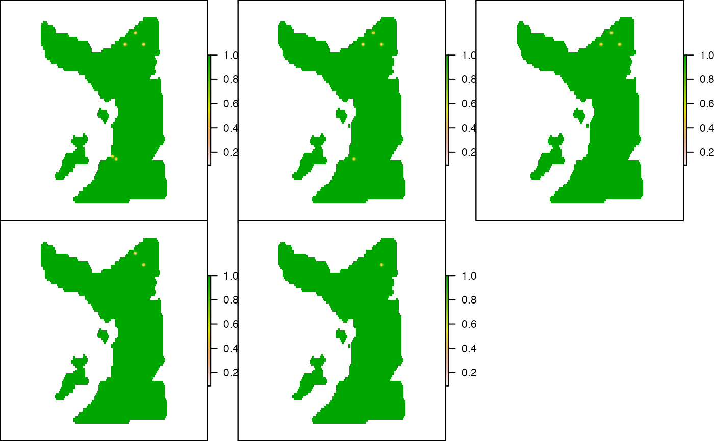
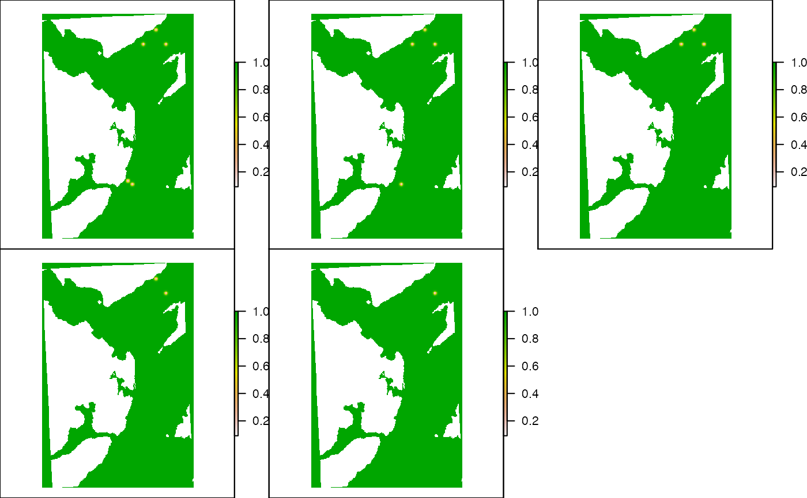

Setup detection probability kernels for the AC* algorithm(s)
Source:R/acs_setup.R
acs_setup_detection_kernels.RdThis function produces detection probability kernels for incorporation into the acoustic-contour* (AC*) algorithms. Within acoustic centroids, the incorporation of detection probability kernels reduces uncertainty and increases precision in simulated patterns of space use by up-weighting areas nearer to receivers when an individual is detected and down-weighing areas nearer to receivers when an individual is not detected (see Details).
To implement the function, a SpatialPointsDataFrame that defines receiver IDs, locations and deployment dates must be supplied (via xy). A record of servicing events for receivers can also be supplied (via services). Detection probability kernels are calculated around each receiver, using a user-defined function based on Euclidean distances (calc_detection_pr) across a raster (map). Kernels can be restricted by the coastline and boundaries of an area if applicable. These kernels are used to weight possible locations around a receiver when an individual is detected.
For each unique array design (i.e. set of active receivers, given receiver deployment dates and servicing events, if applicable), a detection probability surface across the whole area is also created, which is used to weight possible locations of the individual in the time steps between detections (up-weighting locations away from receivers). By default, these calculations account for any areas of overlap in the detection probability kernels of multiple receivers. This step is computationally demanding, but it can be suppressed or sped-up via the overlaps argument. Outputs are returned in a named list that is designed to be incorporated into the AC* algorithm(s).
acs_setup_detection_kernels( xy, services = NULL, centroids, overlaps = NULL, calc_detection_pr, map, coastline = NULL, boundaries = NULL, verbose = TRUE )
Arguments
| xy | A |
|---|---|
| services | (optional) A dataframe that defines receiver IDs and servicing |
| centroids | The list of detection centroids, with one element for each number from |
| overlaps | (optional) A named list, from |
| calc_detection_pr | A function that takes in a vector of distances and returns a vector of detection probabilities (around a receiver). Detection probability should decline to 0 after the |
| map | A (blank) |
| coastline | (optional) A |
| boundaries | An |
| verbose | A logical input that defines whether or not to print messages to the console to relay function progress. |
Value
The function returns a named list with five elements:
receiver_specific_kernels. A list, with one element for all integers from 1 to the maximum receiver number. Any elements that do not correspond to receivers contain a
NULLelement. List elements that correspond to receivers contain arasterof the detection probability kernel around the relevant receiver. Cells values define the detection probability around a receiver, givencalc_detection_pr. In the AC* algorithm(s), these kernels are used to up-weight location probabilities near to a receiver when it is detected (following modification to account for overlapping areas, if necessary).receiver_specific_inv_kernels. A list, as for
receiver_specific_kernels, but in which elements contain the inverse detection probability kernels (i.e., 1 - detection probability). In the AC* algorithm(s), these is used to down-weight-weight location probabilities in the overlapping regions between a receiver that recorded detections and others that did not at the same time.array_design_intervals. A dataframe that defines the number and deployment times of each unique array design, resulting from receiver deployment, servicing and removal. In the times between detections, this is used to select the appropriate `background' detection probability surface (see below). This contains the following columns:
array_idAn integer vector that defines each unique array design.array_start_dateA Date that defines the start date of each array design.array_end_dateA Date that defines the end date of each array design.array_intervalAnInterval-classvector that defines the deployment period of each array design.
bkg_surface_by_design. A list, with one element for each array design, that defines the detection probability surface across all receivers deployed in that phase of the study. In areas that are covered by the detection probability kernel of a single receiver, the detection probability depends only on distance to that receiver (via
calc_detection_pr). In areas covered by multiple, overlapping kernels, detection probability represents the combined detection probability across all overlapping kernels (see Details).bkg_inv_surface_by_design. A list, as above for
bkg_surface_by_design, but which contains the inverse detection probability surface (i.e., 1 -bkg_surface_by_design). In the AC* algorithm(s), this is used to up-weight areas away from receivers (or, equivalently, down-weight areas near to receivers) in the time steps between detections.
Details
A detection probability kernel is a bivariate probability density function that describes detection probability around a receiver. Typically, this takes the shape of a dome whereby detection probability declines uniformly around a receiver with increasing distance. Accordingly, this function assumes that detection probability kernels only depend on distance (via calc_detection_pr) and are constant in space and time. Spatially variable detection probability kernels can be incorporated just as easily into the AC* algorithm(s) but need to be created manually. For example, in areas of complex coastline, narrow peninsulas that punctuate detection centroids may effectively block transmissions from the outer regions of detection centroids from being detected at receivers, in which case a model that incorporates the `line of sight' between receivers and the surrounding regions may be appropriate. However, temporally variable detection probability kernels are not currently supported by the AC* algorithm(s).
The purpose of detection probability kernels within the AC* algorithm(s) is to reduce the uncertainty of the possible positions of an individual within the acoustic centroids, both when an individual is detected and when it is not. When an individual is detected at a receiver, a central assumption of the AC* algorithm(s) is that the individual is within a finite radius of that receiver in an area defined as the ‘detection centroid’. Under the simplest implementation of the algorithm, this represents a threshold detection probability model in which the probability of detection is certain within the centroid and zero outside. Under this model, the individual is equally likely to have been in any location within the centroid and all possible locations of the individual are weighted equally. This approach is suitable for the most conservative analyses, since even unlikely positions of the individual receive equal weighting. However, detection probability typically declines with distance around a receiver and the incorporation of this information in the form of kernels around the receiver at which is detected (and any receivers with overlapping kernels) improve precision by increasing the weighting for some areas over others. The way in which this increase in precision is realised over space depends on whether or not detection probability kernels and the timing of detections at multiple receivers overlap.
In the simplest scenario, an individual is detected at a receiver whose centroid does not overlap with any other receiver and the kernel simply increases the weight of locations nearest to the receiver (according to a user-specified detection probability function). For some array designs, an alternative possibility is that an individual is detected at a receiver whose centroid overlaps with other receiver(s). In this case, detection or lack of detection at the same moment at the receivers with overlapping centroids provides further information on the location of the individual. One the one hand, if the individual is not detected at the other receiver(s), then the probability that the individual is in the overlapping region(s) is reduced in line with the overlap in detection probability, which decreases the weight of potential locations in these areas. On the other hand, if the individual is detected at effectively the same time at multiple receiver(s), then the individual is more likely to be within the overlapping parts of their centroids, and the weight of possible locations here is correspondingly elevated. The definition of ‘effectively’ is context specific but depends on the accuracy with which the clocks of different receivers are synchronised. (For example, ± 5 s might be reasonable.) In these situations, the detection centroid essentially just acts as a computational device by restricting calculations to the centroid(s) and ‘cutting’ the probability of detection to zero beyond this area.
This process follows the standard rules of probability, with the probability of any location (xy) when the individual is detected given by the product of the detection probability at all the receivers at which the individual was detected (\(\prod Pr(det)_{xy, detection = 1}\), which up-weights areas that intersect between receivers that recorded detections), multiplied by the product of not being detected at all the receivers at which it was not detected (\(\prod (1 - Pr(det)_{xy, detection = 0}\), which down-weights areas that intersect with receivers that did not record detections); i.e.,
$$\prod Pr(det)_{xy, detection = 1} \times \prod (1 - Pr(det)_{xy, detection = 0}$$
By way of illustration, consider a simple array comprising three equidistant receivers with equally overlapping detection centroids. An individual is detected at two receivers but not the third. In this scenario, the individual must be located in the intersection between the centroids of the two receivers at which it was detected, but it is more likely to be located in the part of this region that does not intersect with the third receiver (call this area A and the intersecting area for all three receivers B). To assign some numbers to this example, consider the overlap of a single detection probability, say the contour \(Pr(det) = 0.2\). In this case, the probability of the individual being located in area A is the probability of being detected at receiver 1 (0.2) and receiver 2 (0.2) but not receiver (3) (\(1 - 0\)), which equals 0.04. In comparison, the probability of the individual being located in area B is the probability of being detected at receiver 1 (0.2) and receiver 2 (0.2), but not receiver 3 (\(1 - 0.2\)), which equals 0.032. (In the AC* algorithms(s), these probabilities are re-scaled, but the point is detection probability kernels up-weight some areas and down-weight others, using the rules of probability, in line with intuitive expectations.)
When an individual is not detected, the detection centroid grows into a set of ‘acoustic centroids’ that describe our increasing uncertainty in the location of the individual. As they grow, they may encompass other detection centroids before they shrink towards the receiver at which the individual is next detected. During this time, the AC* algorithm(s) identify the possible locations of the individual within these areas. Under the most conservative approach, at each time step all positions are treated as equally likely (although normalisation within the algorithm(s) can be implemented to down-weight time steps in which the location of the individual is more uncertain). This includes any positions within the detection centroids of other receivers since, under realistic conditions, there is usually a non-zero probability that an individual can be near a receiver and yet remain undetected. However, this is typically unlikely and when the goal of the analysis is to create more precise estimates of space use, the incorporation of detection probability kernel(s) around receivers effectively reduces the probability that the individual is within their detection centroids during this time. Again, to incorporate detection probability kernels in this way, it is necessary to account for overlapping detection ranges, where the probability of detection is higher and, therefore, the probability of a possible location in such an area is lower given the absence of a detection. As above, this process follows the laws of probability. In any given location, the probability of no detection(s) is given by the product of receivers' inverse detection probability kernels. This is used to down-weight possible locations near receivers, especially in areas with overlapping kernels, effectively up-weighting possible locations further away, when an individual is not detected.
In summary, in the AC* algorithm(s), detection and acoustic centroids describe the spatial extent of our uncertainty when an individual is detected and in the time between detections respectively. The purpose of this function is to pre-process and package the information provided by detection probability kernels in such a way as to facilitate its incorporation into the AC* algorithm(s). This improves the precision of simulated patterns of space use by down- or up-weighting areas according to a model of detection probability. This provides a reasonable overall assessment of the places in which an individual could have spend more or less time over a period of study.
However, it is worth noting that, within acoustic centroids, unrealistic areas may be highlighted in which an individual could not have been located because of movement constraints which are not captured by centroid-level expansion and contraction. For example, there may be parts of a centroid that are highly unlikely given a detection at a nearby receiver because they are too far away from the receiver at which the individual was subsequently detected. In the AC*PF algorithm(s), the incorporation of a movement model further reduces uncertainty by accounting for the constraints imposed by an individual’s current position on its next position.
See also
This is one of a number of functions used to set up the AC and ACDC algorithms implemented by ac and acdc: acs_setup_mobility, acs_setup_centroids and acs_setup_detection_kernels. This function is supported by make_matrix_receivers, which defines receiver activity statuses; acs_setup_centroids, which defines acoustic centroids; and get_detection_centroids_overlap, which defines detection centroid overlaps
Author
Edward Lavender
Examples
#### Set up data for examples ## Define receiver IDs, locations and deployment dates # Focus on a subset of receivers for example speed moorings <- dat_moorings[1:5, ] # Define receiver locations as a SpatialPoints object with a UTM CRS proj_wgs84 <- sp::CRS(SRS_string = "EPSG:4326") proj_utm <- sp::CRS(SRS_string = "EPSG:32629") xy <- sp::SpatialPoints(moorings[, c("receiver_long", "receiver_lat")], proj_wgs84) xy <- sp::spTransform(xy, proj_utm) # Link receiver IDs, locations and deployment dates to form a SpatialPointsDataFrame # ... Note required column names and class types. xy <- sp::SpatialPointsDataFrame(xy, moorings[, c("receiver_id", "receiver_start_date", "receiver_end_date")]) ## Define blank map of area for which AC* algorithm(s) will be implemented # ... The resolution must be sufficiently high # ... such that there are areas with non zero detection probability. # ... However, function speed will fall with large, high resolution rasters. # ... Here, we set a low resolution for example speed. map_blank <- raster::raster(raster::extent(dat_gebco), res = c(50, 50)) map_blank <- raster::setValues(map_blank, 0) ## Define detection probability function # This should depend on distance alone # Detection probability should decline to 0 after detection_range # ... (defined in flapper::acs_setup_centroids()). # ... Here, we assume detection_range = 425 m. calc_dpr <- function(x){ ifelse(x <= 425, stats::plogis(2.5 + -0.02 * x), 0) } plot(0:1000, calc_dpr(0:1000), type = "l")## Get detection centroids and, if applicable, information on their overlap(s) # We'll use the example centroids provided in dat_centroids # We'll get their overlaps via flapper::get_detection_centroids_overlap overlaps <- get_detection_centroids_overlap( centroids = get_detection_centroids(xy = xy, byid = TRUE) )#### Example (1): Implement function using default options kernels <- acs_setup_detection_kernels(xy = xy, centroids = dat_centroids, overlaps = overlaps, calc_detection_pr = calc_dpr, map = map_blank)#> flapper::acs_setup_detection_kernels() called (@ 2021-12-02 14:35:52)... #> ... Setting up function... #> ... Getting receiver-specific kernels (for detection)... #> #> ... ... For receiver 3 ... #> ... ... ... Isolating detection centroid ... #> ... ... ... Calculating distances from the receiver ... #> ... ... ... Calculating detection probability ... #> ... ... ... Processing kernel ... #> #> ... ... For receiver 4 ... #> ... ... ... Isolating detection centroid ... #> ... ... ... Calculating distances from the receiver ... #> ... ... ... Calculating detection probability ... #> ... ... ... Processing kernel ... #> #> ... ... For receiver 7 ... #> ... ... ... Isolating detection centroid ... #> ... ... ... Calculating distances from the receiver ... #> ... ... ... Calculating detection probability ... #> ... ... ... Processing kernel ... #> #> ... ... For receiver 9 ... #> ... ... ... Isolating detection centroid ... #> ... ... ... Calculating distances from the receiver ... #> ... ... ... Calculating detection probability ... #> ... ... ... Processing kernel ... #> #> ... ... For receiver 11 ... #> ... ... ... Isolating detection centroid ... #> ... ... ... Calculating distances from the receiver ... #> ... ... ... Calculating detection probability ... #> ... ... ... Processing kernel ... #> ... Getting receiver-specific inverse kernels... #> ... Getting area-wide kernels (for non-detection)... #> ... ... Get unique array designs... #> ... ... Get area wide kernels for each array design... #> #> ... ... ... For design 1/5... #> ... ... ... ... Extract detection probability kernels for active receivers... #> ... ... ... ... Combining detection kernels to calculate the background detection probability surfaces (this is a slow step)... #> #> ... ... ... For design 2/5... #> ... ... ... ... Extract detection probability kernels for active receivers... #> ... ... ... ... Combining detection kernels to calculate the background detection probability surfaces (this is a slow step)... #> #> ... ... ... For design 3/5... #> ... ... ... ... Extract detection probability kernels for active receivers... #> ... ... ... ... Combining detection kernels to calculate the background detection probability surfaces (this is a slow step)... #> #> ... ... ... For design 4/5... #> ... ... ... ... Extract detection probability kernels for active receivers... #> ... ... ... ... Combining detection kernels to calculate the background detection probability surfaces (this is a slow step)... #> #> ... ... ... For design 5/5... #> ... ... ... ... Extract detection probability kernels for active receivers... #> ... ... ... ... Combining detection kernels to calculate the background detection probability surfaces (this is a slow step)... #> ... Process detection probability kernels ... #> ... flapper::acs_setup_detection_kernels() call completed (@ 2021-12-02 14:35:54) after ~0.03 minutes.#> Length Class Mode #> receiver_specific_kernels 11 -none- list #> receiver_specific_inv_kernels 11 -none- list #> array_design_intervals 4 data.frame list #> bkg_surface_by_design 5 -none- list #> bkg_inv_surface_by_design 5 -none- list# Examine example receiver-specific kernels pp <- graphics::par(mfrow = c(1, 2)) raster::plot(kernels$receiver_specific_kernels[[3]]) points(xy[xy$receiver_id == 3, ], cex = 2) raster::plot(kernels$receiver_specific_kernels[[4]])graphics::par(pp) # Examine example receiver-specific inverse kernels pp <- graphics::par(mfrow = c(1, 2)) raster::plot(kernels$receiver_specific_inv_kernels[[3]]) points(xy[xy$receiver_id == 3, ], cex = 2) raster::plot(kernels$receiver_specific_inv_kernels[[4]])graphics::par(pp) # Examine background detection Pr surfaces # (for each unique combination of receivers that were deployed) pp <- graphics::par(mfrow = c(2, 3), mar = c(0, 0, 0, 0)) lapply(kernels$bkg_surface_by_design, function(bkg) { raster::plot(bkg, axes = FALSE) graphics::box() })#> [[1]] #> NULL #> #> [[2]] #> NULL #> #> [[3]] #> NULL #> #> [[4]] #> NULL #> #> [[5]] #> NULL #># Examine background inverse detection Pr surfaces pp <- graphics::par(mfrow = c(2, 3), mar = c(0, 0, 0, 0)) lapply(kernels$bkg_inv_surface_by_design, function(bkg) { raster::plot(bkg, axes = FALSE) graphics::box() })#> [[1]] #> NULL #> #> [[2]] #> NULL #> #> [[3]] #> NULL #> #> [[4]] #> NULL #> #> [[5]] #> NULL #>#### Example (2): Incorporate spatial information (coastline, area boundaries) # Define spatial mask for the land and check this via a plot sea <- invert_poly(dat_coast) area <- raster::setValues(map_blank, 1) raster::plot(raster::mask(area, sea))# Implement algorithm kernels <- acs_setup_detection_kernels(xy = xy, centroids = dat_centroids, overlaps = overlaps, calc_detection_pr = calc_dpr, map = map_blank, coastline = sea, boundaries = update_extent(map_blank, -1000))#> flapper::acs_setup_detection_kernels() called (@ 2021-12-02 14:35:56)... #> ... Setting up function... #> ... Getting receiver-specific kernels (for detection)... #> #> ... ... For receiver 3 ... #> ... ... ... Isolating detection centroid ... #> ... ... ... Calculating distances from the receiver ... #> ... ... ... Calculating detection probability ... #> ... ... ... Processing kernel ... #> #> ... ... For receiver 4 ... #> ... ... ... Isolating detection centroid ... #> ... ... ... Calculating distances from the receiver ... #> ... ... ... Calculating detection probability ... #> ... ... ... Processing kernel ... #> #> ... ... For receiver 7 ... #> ... ... ... Isolating detection centroid ... #> ... ... ... Calculating distances from the receiver ... #> ... ... ... Calculating detection probability ... #> ... ... ... Processing kernel ... #> #> ... ... For receiver 9 ... #> ... ... ... Isolating detection centroid ... #> ... ... ... Calculating distances from the receiver ... #> ... ... ... Calculating detection probability ... #> ... ... ... Processing kernel ... #> #> ... ... For receiver 11 ... #> ... ... ... Isolating detection centroid ... #> ... ... ... Calculating distances from the receiver ... #> ... ... ... Calculating detection probability ... #> ... ... ... Processing kernel ... #> ... Getting receiver-specific inverse kernels... #> ... Getting area-wide kernels (for non-detection)... #> ... ... Get unique array designs... #> ... ... Get area wide kernels for each array design... #> #> ... ... ... For design 1/5... #> ... ... ... ... Extract detection probability kernels for active receivers... #> ... ... ... ... Combining detection kernels to calculate the background detection probability surfaces (this is a slow step)... #> #> ... ... ... For design 2/5... #> ... ... ... ... Extract detection probability kernels for active receivers... #> ... ... ... ... Combining detection kernels to calculate the background detection probability surfaces (this is a slow step)... #> #> ... ... ... For design 3/5... #> ... ... ... ... Extract detection probability kernels for active receivers... #> ... ... ... ... Combining detection kernels to calculate the background detection probability surfaces (this is a slow step)... #> #> ... ... ... For design 4/5... #> ... ... ... ... Extract detection probability kernels for active receivers... #> ... ... ... ... Combining detection kernels to calculate the background detection probability surfaces (this is a slow step)... #> #> ... ... ... For design 5/5... #> ... ... ... ... Extract detection probability kernels for active receivers... #> ... ... ... ... Combining detection kernels to calculate the background detection probability surfaces (this is a slow step)... #> ... Process detection probability kernels ... #> ... flapper::acs_setup_detection_kernels() call completed (@ 2021-12-02 14:35:58) after ~0.03 minutes.# Examine example receiver-specific kernels pp <- graphics::par(mfrow = c(1, 2)) raster::plot(kernels$receiver_specific_kernels[[3]]) points(xy[xy$receiver_id == 3, ], cex = 2) raster::plot(kernels$receiver_specific_kernels[[4]])graphics::par(pp) # Examine example receiver-specific inverse kernels pp <- graphics::par(mfrow = c(1, 2)) raster::plot(kernels$receiver_specific_inv_kernels[[3]]) points(xy[xy$receiver_id == 3, ], cex = 2) raster::plot(kernels$receiver_specific_inv_kernels[[4]])graphics::par(pp) # Examine background detection Pr surfaces # ... (for each unique combination of receivers that were deployed) pp <- graphics::par(mfrow = c(2, 3), mar = c(0, 0, 0, 0)) lapply(kernels$bkg_surface_by_design, function(bkg) { raster::plot(bkg, axes = FALSE) graphics::box() })#> [[1]] #> NULL #> #> [[2]] #> NULL #> #> [[3]] #> NULL #> #> [[4]] #> NULL #> #> [[5]] #> NULL #># Examine background inverse detection Pr surfaces pp <- graphics::par(mfrow = c(2, 3), mar = c(0, 0, 0, 0)) lapply(kernels$bkg_inv_surface_by_design, function(bkg) { raster::plot(bkg, axes = FALSE) graphics::box() })#> [[1]] #> NULL #> #> [[2]] #> NULL #> #> [[3]] #> NULL #> #> [[4]] #> NULL #> #> [[5]] #> NULL #>